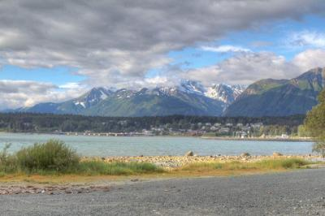

Hi, I'm Alyssa! Welcome to my personal website where I share my academic interests, work experience, and recent projects. I am an environmental scientist and geospatial analyst helping solve complex ecological problems through data, spatial analysis, and field-based research. I combine my background in ecology, remote sensing, and GIS to study environmental change, support conservation decision-making, and communicate science through interpretation. Whether you're looking for support on a research project, environmental analysis, or GIS workflow, I’d love to collaborate. Let’s work together to create something impactful!
Recent Project Highlights
StoryMap: Climate Change in Alaska's Indigenous Villages
Alaska’s Indigenous coastal communities are experiencing the effects of climate change. As erosion, stronger storms, and melting permafrost reshape the coastline, villages that have existed for generations are being forced to consider relocation. Nearly all residents of coastal Alaska Native villages are Indigenous peoples whose lives are deeply rooted in subsistence practices such as hunting, fishing, and gathering wild plants. Their traditional land-based lifestyles now face rapid disruption.
View Full StoryMap